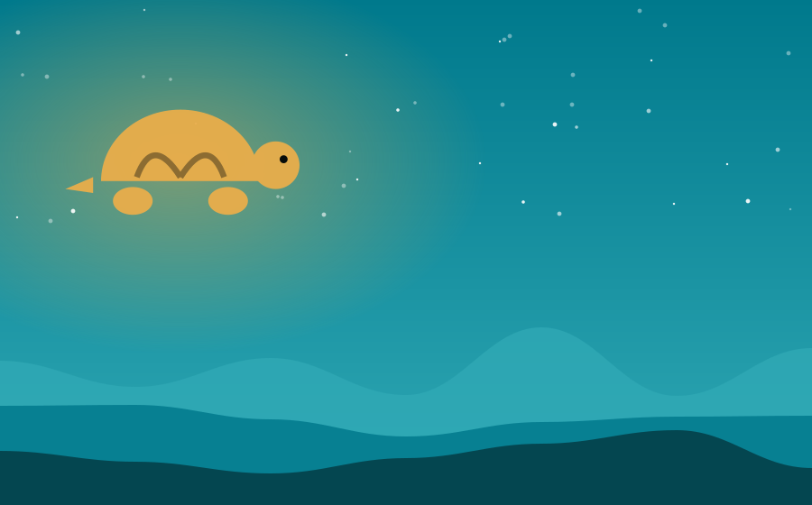

Chapter 1 of 1
Slow and Steady Saves the Shore

On a quiet beach at the edge of the world lived a little turtle named Tomo. He was the slowest creature on the sand. The crabs scuttled past him, the seagulls laughed overhead, and the sandpipers shouted, "Hurry up, Tomo! You'll miss tomorrow!"
Tomo only smiled. "I'll get there," he said, "one step at a time."
One evening, the sky turned the color of a bruise, and the sea began to rise. The animals panicked. The crabs dashed in circles, the gulls flapped in all directions, and no one could decide which way to run. Only Tomo stayed calm. He remembered the old tunnels in the dunes, the ones he had walked every day while the others raced. "This way," he called, and he led them step by careful step.
One by one, the creatures followed his slow, steady pace. They reached the safe, dry tunnels just as the first great wave crashed over the beach. All night, the storm raged, and all night, the animals listened to the little turtle humming softly in the dark.
In the morning, nobody laughed. They had learned that speed gets you somewhere quickly, but patience knows the way.
— The End —